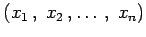
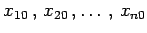

Inhalt Index DeskTop Bronstein

 Differentialrechnung Differentiation von Funktionen von mehreren Veränderlichen Extremwerte von Funktionen von mehreren Veränderlichen
Differentialrechnung Differentiation von Funktionen von mehreren Veränderlichen Extremwerte von Funktionen von mehreren Veränderlichen


Die notwendige, aber nicht hinreichende Bedingung dafür, daß die Funktion für ein Wertesystem  ein Extremum besitzt, besteht darin, daß das Wertesystem die n Gleichungen
erfüllt. Im allgemeinen Falle sind die hinreichenden Bedingungen von komplizierter Art. Damit man die Frage, ob die Funktion für ein Lösungssystem der Gleichung (6.72) ein Extremum besitzt oder nicht, effektiv beantworten kann, untersucht man solche Werte der Funktion, die nahe bei  liegen.
Mit Hilfe der Extremwertbestimmung bei Funktionen von mehreren Veränderlichen lassen sich viele Approximationsaufgaben, die vor allem unter dem Namen Ausgleichsaufgaben oder Quadratmittelaufgaben bekannt sind, lösen. Dazu gehören: